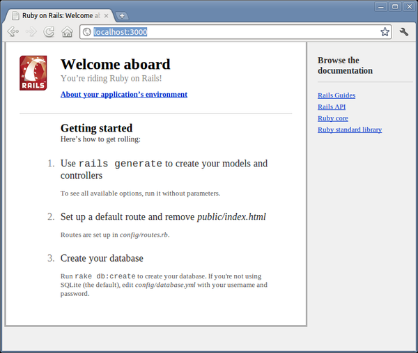

When you install the Rails framework, you also get a new command-line tool, rails, that is used to construct each new Rails application you write.
Why do we need a tool to do this? Why can’t we just hack away in our favorite editor and create the source for our application from scratch? Well, we could just hack. After all, a Rails application is just Ruby source code. But Rails also does a lot of magic behind the curtain to get our applications to work with a minimum of explicit configuration. To get this magic to work, Rails needs to find all the various components of your application. As we’ll see later (in Section 18.1, Where Things Go), this means we need to create a specific directory structure, slotting the code we write into the appropriate places. The rails command simply creates this directory structure for us and populates it with some standard Rails code.
To create your first Rails application, pop open a shell window, and navigate to a place in your filesystem where you want to create your application’s directory structure. In our example, we’ll be creating our projects in a directory called work. In that directory, use the rails command to create an application called demo. Be slightly careful here—if you have an existing directory called demo, you will be asked whether you want to overwrite any existing files. (Note: if you want to specify which Rails version to use, as described in Section 1.4, Choosing a Rails Version, now would be the time to do so.)
rubys> cd work |
|
work> rails new demo |
|
create |
|
create README |
|
create Rakefile |
|
create config.ru |
|
: : : |
|
create vendor/plugins |
|
create vendor/plugins/.gitkeep |
|
run bundle install |
|
Fetching source index for http://rubygems.org/ |
|
: : : |
|
Your bundle is complete! |
|
Use `bundle show [gemname]` to see where a bundled gem is installed. |
|
work> |
The command has created a directory named demo. Pop down into that directory, and list its contents (using ls on a Unix box or dir under Windows). You should see a bunch of files and subdirectories:
work> cd demo |
|
demo> ls -p |
|
app/ config.ru doc/ Gemfile.lock log/ Rakefile script/ tmp/ |
|
config/ db/ Gemfile lib/ public/ README test/ vendor/ |
All these directories (and the files they contain) can be intimidating to start with, but we can ignore most of them for now. In this chapter, we’ll use only one of them directly: the app directory, where we’ll write our application.
Included in these files is everything you need to start a stand-alone web server that can run our newly created Rails application. So, without further ado, let’s start our demo application:
demo> rails server |
|
=> Booting WEBrick |
|
=> Rails 3.1.0 application starting on http://0.0.0.0:3000 |
|
=> Call with -d to detach |
|
=> Ctrl-C to shutdown server |
|
[2011-07-23 10:38:18] INFO WEBrick 1.3.1 |
|
[2011-07-23 10:38:18] INFO ruby 1.9.2 (2011-05-12) [x86_64-linux] |
|
[2011-07-23 10:38:18] INFO WEBrick::HTTPServer#start: pid=6044 port=3000 |
Which web server is run depends on what servers you have installed. WEBrick is a pure-Ruby web server that is distributed with Ruby itself and therefore is guaranteed to be available. However, if another web server is installed on your system (and Rails can find it), the rails server command may use it in preference to WEBrick. You can force Rails to use WEBrick by providing an option to the rails command:
demo> rails server webrick |
As the last line of the startup tracing indicates, we just started a web server on port 3000. The 0.0.0.0 part of the address means that WEBrick will accept connections on all interfaces. On Dave’s OS X system, that means both local interfaces (127.0.0.1 and ::1) and his LAN connection. We can access the application by pointing a browser at the URL http://localhost:3000. The result is shown in .
|  |
|
Figure 1. Newly created Rails application |
If you look at the window where you started the server, you’ll see tracing showing you started the application. We’re going to leave the server running in this console window. Later, as we write application code and run it via our browser, we’ll be able to use this console window to trace the incoming requests. When the time comes to shut down your application, you can press Ctrl-C in this window to stop WEBrick. (Don’t do that yet—we’ll be using this particular application in a minute.)
At this point, we have a new application running, but it has none of our code in it. Let’s rectify this situation.